“Since the fabric of the universe is most perfect and the work of a most wise Creator, nothing at all takes place in the universe in which some rule of maximum or minimum does not appear.”
— Leonhard Euler
In Chapter 1, we introduced MPC as a controller that looks ahead and adjusts control actions by solving an optimisation problem at every time step. But this raises a fundamental question: how exactly does the computer decide which adjustment is the correct one?
A classical PID controller follows a simple, fixed rule: if the error increases, push back harder. It is reactive and rigid. An MPC controller, however, does not follow a pre-written rule. Instead, at every single time step, it faces a choice. It determines the best control action within the given constraints. This process of systematic selection is called optimisation.
Optimisation provides the mathematical framework for translating engineering objectives—such as drive fast but be safe—into precise numerical instructions that a computer can understand. If the system model is the map that tells the controller where it can go, optimisation is the navigator that decides where it should go.
In this chapter, we step away from system dynamics for a moment to focus purely on this decision-making engine. We will learn how to formulate engineering goals as objective functions, how to translate physical limits into mathematical constraints, and how to distinguish between problems that are easy for computers to solve and those that are computationally impossible.
In a general sense, the Oxford Dictionary defines optimisation as:
“The action of making the best or most effective use of a situation or resource.”
In engineering, we translate this concept into a precise mathematical framework. We are not just “trying to do our best”; we are systematically searching for a specific numerical value that satisfies a mathematical criterion.
Mathematical Definition of Optimisation A numerical approach for seeking a best decision or action from a set of alternatives.
Formally, optimisation equates to the minimisation (or maximisation) of an objective function \(J(x)\), depending on a variable vector \(x\), subject to constraints. The general mathematical problem is written as:
\[\begin{equation} \begin{aligned} \min_{x} \quad & J(x) \\ \text{s.t.} \quad & x \in S \end{aligned} \end{equation}\]
To translate a real-world engineering problem into the mathematical form described above, we must identify three fundamental components. Regardless of the complexity, almost every optimisation problem consists of:
Decision Variables (\(x\)): These are the knobs the solver can turn to minimise the cost. In the context of MPC, these variables usually represent the sequence of future control inputs (e.g., valve positions, motor currents, steering angles) over the prediction horizon.
Objective Function (\(J\)): A scalar mathematical expression that quantifies performance. The solver attempts to find the decision variables that result in the smallest possible value for this function. It typically represents physical quantities such as energy cost, tracking error, fuel consumption, or elapsed time.
Constraints: The rules that must be obeyed. These define the feasible set (denoted as \(S\)). Constraints distinguish practical engineering from pure mathematics by strictly enforcing physical limits (e.g., maximum voltage, tank capacity) or safety bounds (e.g., obstacle avoidance).
Mathematically, we often denote the decision variables as \(z\) to distinguish them from the system state \(x\) used in control theory. The standard optimisation form is written as:
\[\begin{equation} \begin{aligned} \min_{x} \quad & J (x) \\ \text{s.t.} \quad & g_i(x) \leq 0, \quad i=1,\ldots,m & \text{(Inequality constraints)} \\ & h_j(x) = 0, \quad j=1,\ldots,q & \text{(Equality constraints)} \end{aligned} \end{equation}\]
Study note: Constraint Types
Inequalities (\(g \le 0\)) describe ranges, like “speed must be less than 100 km/h”.
Equalities (\(h = 0\)) describe strict physics, like \(F = ma\). In MPC, the system dynamics (\(x_{k+1} = Ax_k + Bu_k\)) are treated as equality constraints. Note that here \(x\) is the state of the system and not a decision variable.
To make the abstract definitions of decision variables, objective functions, and constraints concrete, let us consider two distinct optimisation problems.
The process of translating a physical or data-driven problem into a mathematical optimisation format is known as modelling. This step is often more challenging than the solution itself. In both examples below, we follow a systematic three-step approach:
Identify the Decision Variables: What are the knobs we can turn?
Formulate the Objective: What is the single metric that defines best?
Define the Constraints: What are the physical or logical limits we must obey?
The first example (Box Volume) illustrates a geometric design problem where physical constraints play a critical role—analogous to actuator limits in control systems. The second example (Linear Regression) introduces the concept of least-squares minimisation, which is the mathematical foundation for data science.
Maximising Box Volume Problem Statement: Given a square piece of cardboard with dimensions \(1\,\text{m} \times 1\,\text{m}\) as shown in Figure [fig:box_volume], we wish to construct an open-top box with the maximum possible volume. We achieve this by cutting equal squares of side length \(x\) from the four corners and folding up the sides.
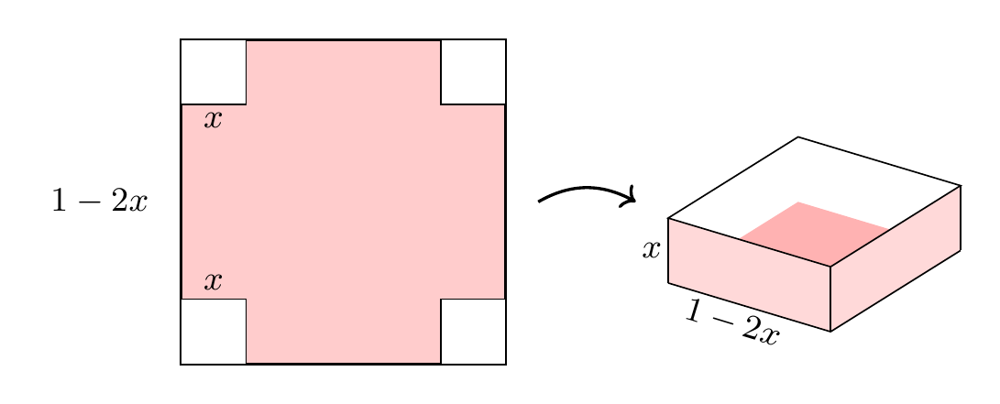
We map this problem to the three components of optimisation:
Decision Variable (\(x\)): The size of the corner cut.
Constraints:
The cut must be positive: \(x \geq 0\).
The cut cannot overlap (total width is 1m): \(2x \leq 1 \implies x \leq 0.5\).
Objective Function: Maximise Volume \(V = \text{length} \times \text{width} \times \text{height}\). \[J(x) = \underbrace{(1-2x) \cdot (1-2x)}_{\textbf{Base Area}} \cdot x = x(1-2x)^2\]
Mathematical Formulation:1 \[\begin{equation*} \begin{aligned} \max_{x} \quad & x(1-2x)^2 \\ \text{s.t.} \quad & 0 \leq x \leq 0.5 \end{aligned} \end{equation*}\] or equivalently \[\begin{equation*} \begin{aligned} \min \quad & -x(1-2x)^2 \\ \text{s.t.} \quad & 0 \leq x \leq 0.5 \end{aligned} \end{equation*}\]
# Box Volume Maximisation
# Cardboard size: L x L (try changing L!)
L = 1.0 # side length of cardboard (m)
def neg_volume(x):
"""Negative volume (minimise this to maximise volume)."""
return -x * (L - 2*x)**2
result = minimize_scalar(neg_volume, bounds=(0, L/2), method='bounded')
x_opt = result.x
V_max = -result.fun
print(f"Optimal cut size: x* = {x_opt:.6f} m")
print(f"Maximum volume: V* = {V_max:.6f} m^3")
print(f"Box: {L-2*x_opt:.4f} x {L-2*x_opt:.4f} x {x_opt:.4f} m")
print(f"Analytical: x* = L/6 = {L/6:.6f}")Linear Regression (Least Squares) Problem Statement: Suppose we are given a dataset containing \(N\) pairs of experimental measurements: \(\{(x_1, y_1), (x_2, y_2), \dots, (x_N, y_N)\}\) as shown in Figure [fig:linear_regression].
We want to find the linear model (a straight line) that "best fits" this data.
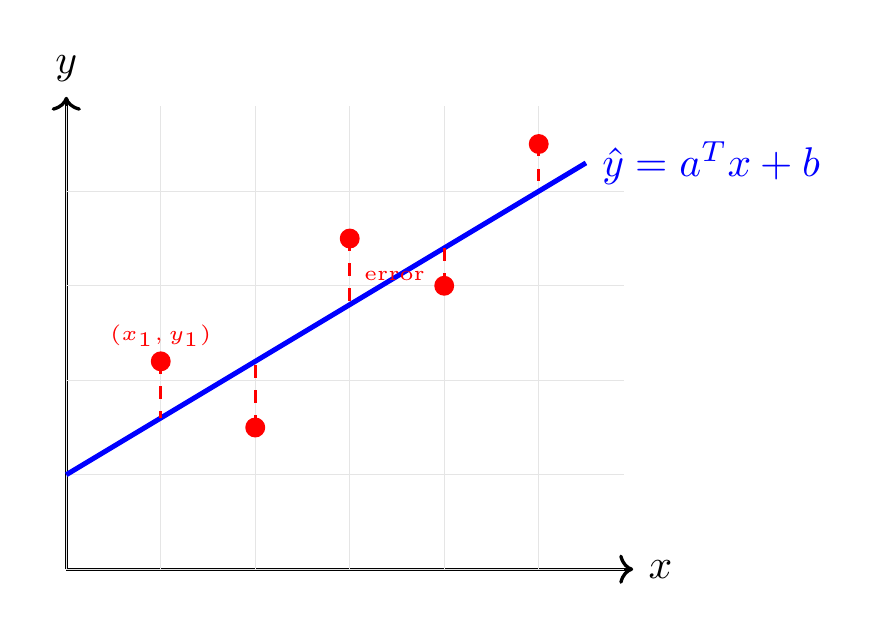
Note that in this specific problem, the \(x\) values are constants (data we measured), not decision variables.
Decision Variables: The parameters of the line: the slope vector \(a \in \mathbb{R}^n\) and the intercept \(b \in \mathbb{R}\).
Note: In the 2D plot above, \(n=1\), so \(a\) is a scalar slope. However, the math holds for \(n\)-dimensional vectors.
Objective Function: We define the prediction for the \(i\)-th data point as \(\hat{y}_i = a^T x_i + b\). We want to minimise the Sum of Squared Errors (SSE): \[J(a, b) = \sum_{i=1}^{N} (y_i - \hat{y}_i)^2 = \sum_{i=1}^{N} \left( y_i - (a^T x_i + b) \right)^2\]
Constraints: In this case, \(a\) and \(b\) can be any real numbers. There are no restrictions. Therefore this is an unconstrained optimisation.
Mathematical Formulation:
\[\begin{equation*}
\min_{a, b} \quad \sum_{i=1}^{N} \left( y_i - (a^T x_i + b) \right)^2
\end{equation*}\]
# Linear Regression — try changing the true model or noise!
np.random.seed(42)
N = 20 # number of data points
true_slope = 2.3 # true slope a
true_intercept = 1.1 # true intercept b
noise_std = 0.8 # measurement noise
x_data = np.linspace(0, 5, N)
y_data = true_slope * x_data + true_intercept + np.random.randn(N) * noise_std
# Solve via Normal Equation: theta = (X'X)^{-1} X'y
X = np.column_stack([x_data, np.ones(N)])
theta = np.linalg.lstsq(X, y_data, rcond=None)[0]
a_opt, b_opt = theta
SSE = np.sum((y_data - (a_opt * x_data + b_opt))**2)
print(f"Slope a* = {a_opt:.4f}, Intercept b* = {b_opt:.4f}")
print(f"SSE = {SSE:.4f}")In the previous examples (the box and the line fitting), we dealt with specific cases. Now, let us formalise the general structure of an optimisation problem involving multiple variables. This is the exact structure used in Model Predictive Control, where we must simultaneously optimise a sequence of inputs over time.
In real-world engineering, we rarely make a single scalar decision. Instead, we must determine a set of \(n\) values simultaneously. To handle this mathematically, we collect all individual decision variables (\(x_1, x_2, \dots, x_n\)) into a single decision vector: \(x \in \mathbb{R}^n\): \[\begin{equation} x = \begin{bmatrix} x_1 \\ x_2 \\ \vdots \\ x_n \end{bmatrix} \end{equation}\] Then the objective function \(J\) maps this vector to a scalar real number (a score or cost): \[J: \mathbb{R}^n \to \mathbb{R}\] For example, in MPC, if we have a control horizon of 10 steps and 2 inputs, our decision vector \(x\) has a dimension of \(n=20\).
The mathematical notation \(J: \mathbb{R}^n \to \mathbb{R}\) often confuses beginners. It reads: "The function \(f\) takes a vector of \(n\) numbers and transforms it into a single real number."
To understand why this is necessary, let us consider a relatable real-world analogy: The Shopping Basket.
Imagine you are at a supermarket checkout.
The Vector (\(x\)): Your shopping basket contains many different items. You might have 2 loaves of bread, 6 eggs, and 1 litre of milk. We can list these quantities as a vector: \[x = \begin{bmatrix} 2 \\ 6 \\ 1 \end{bmatrix} \begin{matrix} \leftarrow \text{Bread} \\ \leftarrow \text{Eggs} \\ \leftarrow \text{Milk} \end{matrix}\] This vector represents the state of your shopping. It is multi-dimensional because it contains different types of information.
The Objective Function (\(J\)): The checkout till scans your items. It applies a specific rule (the price list) to your vector. It multiplies each item by its value and sums them up: \[J(x) = (2 \times £ 1.00) + (6 \times £ 0.20) + (1 \times £ 0.80)\]
The Scalar (\(J\)): The till produces a single number: £4.00.
This is visually described in Figure [fig:cost_function_analogy].
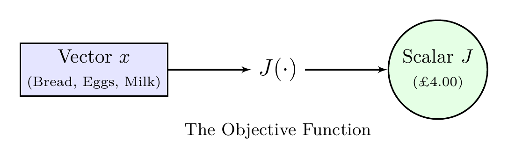
You cannot easily say which of two shopping baskets is larger just by looking at the items—one might have more eggs but no milk. However, once you map them to a scalar (the total price), comparison becomes easy. You can instantly say which basket costs less.
In Model Predictive Control, our basket (\(x\)) contains complex decisions: valve positions, heater settings, and motor speeds over the next 20 minutes. We cannot simply look at two different plans and say Plan A is better than Plan B, because Plan A might use less fuel but Plan B might track the temperature better.
The objective function \(J(x)\) squashes all these complex, multi-dimensional decisions into a single number (a score).
If Plan A scores \(10.5\) and Plan B scores \(8.2\), and we are minimising cost, we know for a fact that Plan B is the mathematical winner.
Key Takeaway Optimisation algorithms cannot minimise a list or a vector. They can only minimise a single number. The objective function acts as a translator, converting a complex list of engineering decisions into a single score that allows us to rank them.
We rarely operate in an ideal world. Our decisions are restricted by physical limits. These restrictions are defined by a finite number of equations or inequalities involving the decision variables.
Inequality Constraints (\(g_i\)): These represent bounds, such as "Temperature must be less than \(100^{\circ}\mathrm{C}\)" or "Valve must be open at least 10%". \[g_i(x) \leq b_i, \quad i = 1, \dots, m\]
Equality Constraints (\(h_j\)): These represent strict physics or model dynamics, such as Input flow must equal output flow or \(F = ma\). \[h_j(x) = 0, \quad j = 1, \dots, q\]
Domain Restrictions: Sometimes variables are not continuous. For instance, a switch is either ON (1) or OFF (0). If \(p\) variables are discrete (integers) and the rest are continuous, we denote the domain as \(x \in \mathbb{R}^{n-p} \times \mathbb{Z}^p\). Note that dealing with domain restrictions is difficult in optimisation.
Collectively, these constraints define a specific region in the \(n\)-dimensional space called the Feasible Set \(S\). The optimisation algorithm is only allowed to search for solutions within this set. \[\begin{equation} S = \{ x \in \mathbb{R}^n \mid g_i(x) \leq b_i \ \forall i, \ h_j(x) = 0 \ \forall j \} \end{equation}\] If the intersection of these constraints is empty (e.g., \(x > 5\) AND \(x < 3\)), the problem is infeasible—there is no solution.
Visualising the Feasible Set Consider a 2-dimensional problem (\(x \in \mathbb{R}^2\)) with two inequality constraints:
\(g_1(x) = x_1^2 + x_2^2 \leq 4\) (Must be inside a circle of radius 2).
\(g_2(x) = x_1^3 - x_2 \leq 0 \implies x_2 \geq x_1^3\) (Must be above the cubic curve).
The feasible set \(S\) is the intersection of these two regions (the purple area as shown in Figure [fig:intersection_of_constraints]).
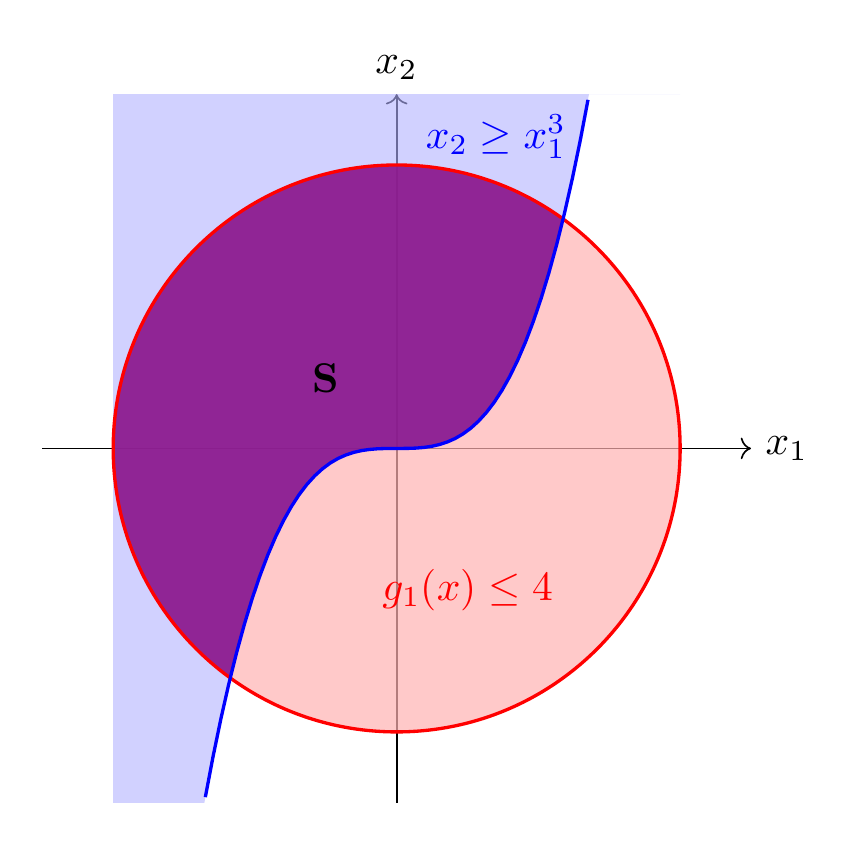
Standard numerical solvers (like quadprog or fmincon in MATLAB) are typically written to perform minimisation. However, engineering problems are often phrased as maximisation (e.g., maximise profit, maximise volume).
To reconcile this, we rely on a mathematical identity. But first, we must clarify a precise piece of notation often used in optimisation: the difference between \(\min\) and \(\arg \min\).
Notation Note: Minimum vs. Argument of the Minimum:
\(\min f(x)\): Returns the value of the function at the minimum. This is the score (the vertical axis on a graph).
\(\arg \min f(x)\): Returns the argument (the variable \(x\)) that produces that minimum. This is the decision (the horizontal axis).
In MPC, we are primarily interested in the \(\arg \min\) because we need to know what input \(u\) to apply to the system, not just what the theoretical cost is.
Converting Maximisation to Minimisation:
With this notation in mind, we can state the equivalence principle. We do not need separate software to solve maximisation problems. We rely on the identity that finding the argument that maximises a function is equivalent to finding the argument that minimises its negative:
\[\begin{equation} \underbrace{\arg \max_{x \in S} f(x)}_{\text{Best Decision}} \equiv \underbrace{\arg \min_{x \in S} \{-f(x)\}}_{\text{Equivalent Search}} \end{equation}\]
Visually, multiplying the objective function by \(-1\) flips the curve upside down. A peak (maximum) in the original function becomes a valley (minimum) in the negated function. While the vertical values flip signs, the horizontal location (\(x\)) of the optimal point remains exactly the same. This is pictured in Figure 1.1.
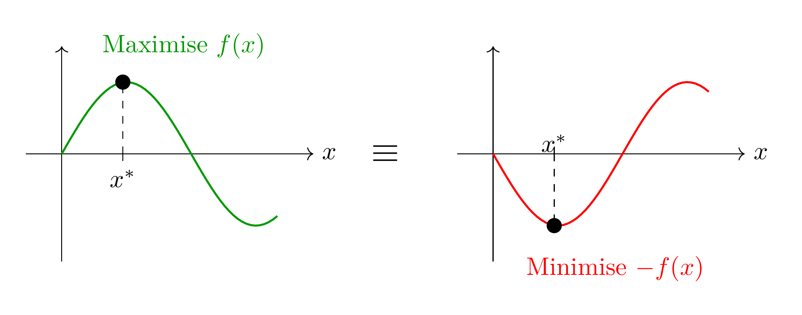
Therefore, in this course, we will consistently formulate our MPC problems as minimisation tasks, usually minimising an energy or error cost function.
With the general structure of an optimisation problem in place, we now refine the vocabulary. Some optimisation problems can be solved in milliseconds on a cheap microcontroller, whilst others might take days on a supercomputer and still fail to find the best solution.
The distinguishing factor is rarely just the size of the problem (the number of variables); rather, it is the geometry of the problem.
The difference between easy and hard problems lies not in the number of variables but in the geometry of the search space. The central concept here is Convexity: if the objective is convex and the constraints form a convex set, then any local minimum is guaranteed to be the global minimum. We begin by defining the building blocks of this geometry: sets and functions.
A fundamental concept in optimisation, particularly in Model Predictive Control (MPC), is that of a convex set. Working with convex sets and functions simplifies the optimisation problem significantly, often guaranteeing that any local optimum is also a global optimum.
Convex Set A set \(\mathcal{X}\) is convex if and only if for any pair of points \(x\) and \(y\) in \(\mathcal{X}\), any convex combination of \(x\) and \(y\) lies in \(\mathcal{X}\).
Mathematically, this definition is stated as: \[\mathcal{X} \text{ is convex} \quad \Longleftrightarrow \quad \lambda x + (1 - \lambda)y \in \mathcal{X}, \quad \forall \lambda \in [0, 1], \quad \forall x, y \in \mathcal{X}\] The term \(\lambda x + (1 - \lambda)y\) represents a line segment connecting \(x\) and \(y\).
Interpretation All line segments starting and ending in \(\mathcal{X}\) stay within \(\mathcal{X}\).
To illustrate the concept, consider the following examples of convex and non-convex sets.
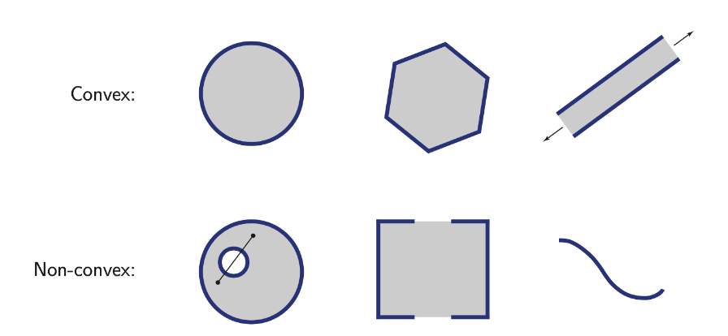
In the context of Model Predictive Control (MPC), constraints are often defined by linear inequalities. Geometrically, these constraints represent hyperplanes and half-spaces. Understanding these geometric primitives is essential because they form the building blocks of convex sets.
Hyperplane A hyperplane is a set of the form: \[\begin{equation} \{x \in \mathbb{R}^n \mid a^\top x = b\} \end{equation}\] where \(a \in \mathbb{R}^n\) (with \(a \neq 0\)) and \(b \in \mathbb{R}\). The vector \(a\) is the normal vector to the hyperplane; it is orthogonal to any vector lying within the hyperplane.
In \(\mathbb{R}^2\), a hyperplane defines a line. In \(\mathbb{R}^3\), it defines a plane. This is shown on the left of Figure 1.3.
Half space A hyperplane divides the space \(\mathbb{R}^n\) into two halves. A half-space is the set of points on one side of (or on) the hyperplane: \[\begin{equation} \{x \in \mathbb{R}^n \mid a^\top x \leq b\} \end{equation}\] This is known as a closed half-space because it includes the boundary (the hyperplane itself). If the inequality is strict (\(<\)), it is an open half-space. This is shown on the right of Figure 1.3.
Hyperplanes and half-spaces are always convex sets. This property ensures that optimisation problems with linear constraints remain convex.
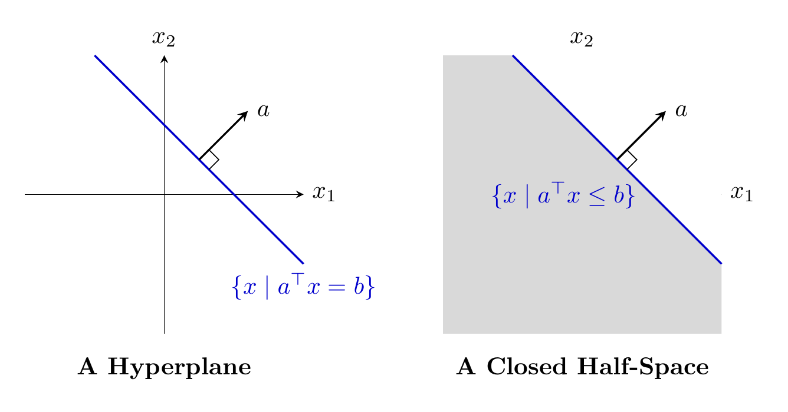
Linear Constraint in \(\mathbb{R}^2\)
Consider a linear relation defined by the equation: \[\begin{equation} 2x_1 + 1x_2 = 2 \end{equation}\] This represents a line in 2D space. To relate this to the standard hyperplane definition \(a^\top x = b\), we define the vectors: \[\begin{equation} a = \begin{pmatrix} 2 \\ 1 \end{pmatrix}, \quad x = \begin{pmatrix} x_1 \\ x_2 \end{pmatrix}, \quad b = 2 \end{equation}\] Thus, the equation becomes: \[\begin{equation} \underbrace{\begin{pmatrix} 2 & 1 \end{pmatrix}}_{a^\top} \begin{pmatrix} x_1 \\ x_2 \end{pmatrix} = \underbrace{2}_{b} \end{equation}\]
Connection to the Gradient:
Readers needing a refresher on vectors, matrices, and eigenvalues may consult Appendix [app:linalg].
We can also view this through the lens of multivariate calculus. Let us define a function \(f(x)\) implicitly by the zero-level set: \[\begin{equation} f(x) = 2x_1 + x_2 - 2 = 0 \end{equation}\] The gradient of this function, denoted as \(\nabla f\), is a column vector containing the partial derivatives with respect to \(x_1\) and \(x_2\): \[\begin{equation} a = \nabla_x f = \begin{pmatrix} \dfrac{\partial f}{\partial x_1} \\[12pt] \dfrac{\partial f}{\partial x_2} \end{pmatrix} = \begin{pmatrix} 2 \\ 1 \end{pmatrix} \end{equation}\] This confirms that the vector \(a = (2, 1)^\top\) is the gradient of the linear function defining the hyperplane. Geometrically, the gradient vector is perpendicular to the level sets of the function, meaning \(a\) is perpendicular to the line \(2x_1 + x_2 = 2\), as shown in Figure [fig:example_hyperplane].
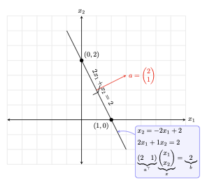
Polyhedron Let \(a_i \in \mathbb{R}^n\) and \(b_i \in \mathbb{R}\) for \(i=1,\dots,m\). A polyhedron \(P \subset \mathbb{R}^n\) is the intersection of a finite number of closed half–spaces, \[P := \{ x \in \mathbb{R}^n \mid a_i^\top x \le b_i,\; i = 1,\dots,m \}.\] If we collect the row vectors \(a_i^\top\) into a matrix \(A := [a_1,\dots,a_m]^\top \in \mathbb{R}^{m \times n}\) and \(b := [b_1,\dots,b_m]^\top \in \mathbb{R}^m\), then we may write \[P := \{ x \in \mathbb{R}^n \mid Ax \le b\},\] where the inequality is understood row–wise.
Polytope A polytope is a bounded polyhedron, that is, a polyhedron which is contained in a ball of finite radius.
Important observation Any intersection of convex sets is convex. Each closed half–space \(\{x \mid a_i^\top x \le b_i\}\) is convex, therefore every polyhedron (and hence every polytope) is a convex set. However, union of convex sets are not convex in general.
Numerical Example: Defining a Polytope
Consider the set \(P \subset \mathbb{R}^2\) defined by the inequalities \[\begin{align*} x_1 &\ge 0, & x_2 &\ge 0, \\ x_1 &\le 3, & x_2 &\le 2, \\ x_1 + x_2 &\le 4. \end{align*}\] We can rewrite these in the standard form \(Ax \le b\) as \[A= \begin{bmatrix} -1 & 0 \\ 0 &-1 \\ 1 & 0 \\ 0 & 1 \\ 1 & 1 \end{bmatrix}, \qquad b= \begin{bmatrix} 0 \\ 0 \\ 3 \\ 2 \\ 4 \end{bmatrix}, \qquad P := \{x\in\mathbb{R}^2 \mid Ax \le b\}.\] The intersection of these half–spaces is a bounded polygon with vertices \[\{(0,0),\ (3,0),\ (3,1),\ (2,2),\ (0,2)\},\] so \(P\) is a polytope.
The polytope \(P\) can be visualised in the \((x_1,x_2)\)–plane as shown in Figure [fig:polyhedron]:
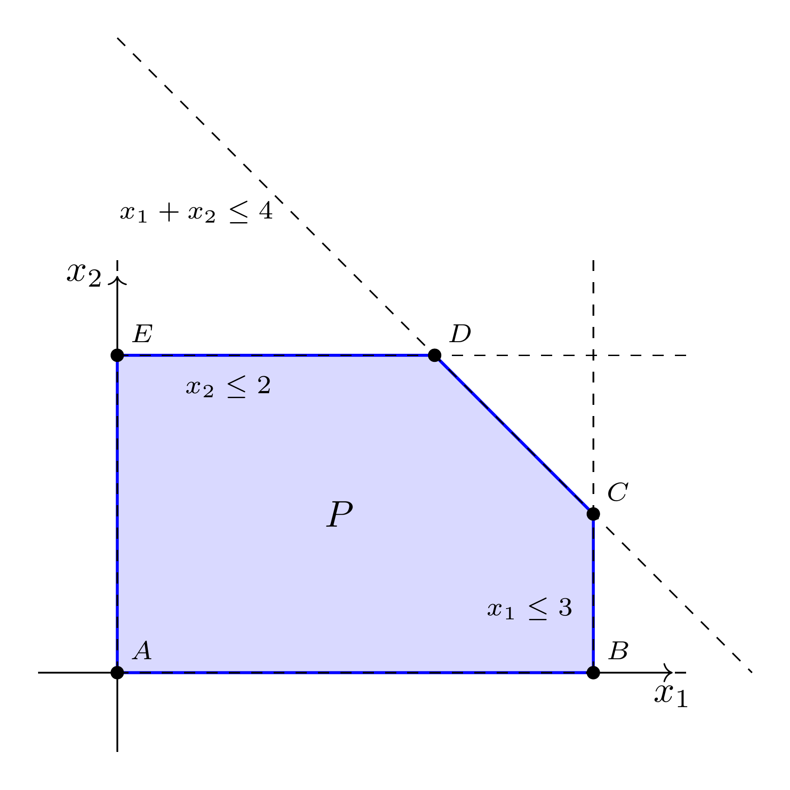
Let \(S\) be a convex subset of a vector space. We define the properties of functions mapping \(S\) to the real numbers \(\mathbb{R}\) as follows.
Convex Function A function \(f: S \rightarrow \mathbb{R}\) is said to be convex if \(S\) is convex and the following inequality holds for all \(z_1, z_2 \in S\) and for all \(\lambda \in [0, 1]\): \[\begin{equation} f(\lambda z_1 + (1 - \lambda)z_2) \leq \lambda f(z_1) + (1 - \lambda)f(z_2) \end{equation}\] Geometrically, this means that the line segment connecting any two points on the graph of the function lies above or on the graph between the two points.
Concave Function A function \(f: S \rightarrow \mathbb{R}\) is concave if \(S\) is convex and \(-f\) is a convex function. Equivalently, the inequality in the definition of convexity is reversed.
The concept of convexity is illustrated in Figure 1.4. The curve represents the function \(f\). The red secant line connects two points \((z_1, f(z_1))\) and \((z_2, f(z_2))\). For a convex function, the value of the function evaluated at a weighted average of two points (the black dot on the curve) is always less than or equal to the weighted average of the function values (the black dot on the red line).
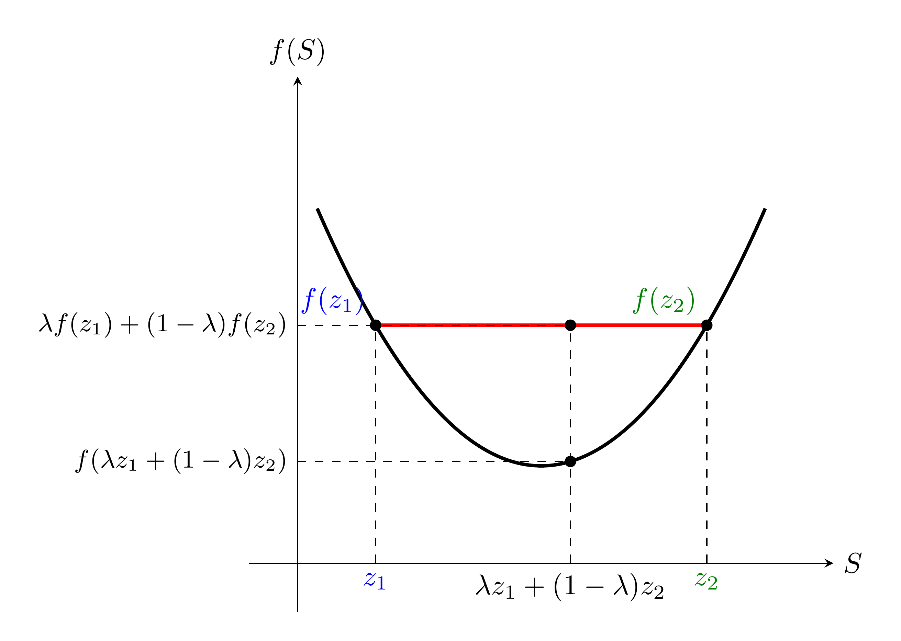
In the previous sections, we defined the general anatomy of an optimisation problem (Variables, Objectives, Constraints). However, in engineering practice, identifying the specific class of a problem is critical.
Different classes of problems require different numerical algorithms (solvers). For instance, solving a linear problem is instantaneous, whereas solving a non-convex nonlinear problem might take hours or fail completely. If we can mathematically massage our engineering problem to fit a standard form, we can solve it efficiently using off-the-shelf software.
We typically classify problems in two ways:
By the existence and type of constraints (Constrained vs. Unconstrained).
By the mathematical structure of the cost and constraint functions (Linear, Quadratic, Nonlinear).
The most fundamental distinction is whether the decision variables are restricted by boundaries.
An unconstrained problem is one where the decision variables can take any value in the Euclidean space \(\mathbb{R}^n\). There are no boundaries, fences, or rules limiting \(x\).
\[\begin{equation} \min_{x \in \mathbb{R}^n} J(x) \end{equation}\]
When dealing with \(n\) variables, the function \(J(x)\) describes a surface in \(n+1\) dimensions. This is hard to visualise. Instead, we use Level Curves (or contour lines). A level curve is a hypersurface defined by \(J(x) = c\), where \(c\) is a constant scalar. This is exactly like looking at a topographical map of a mountain; each line represents a constant height.
Unconstrained Example: The Bowl Consider the simple quadratic function: \[J(x) = x_1^2 + x_2^2\] Here, \(x = [x_1, x_2]^\top\). We want to find the minimum. The level curves are circles where \(x_1^2 + x_2^2 = c\).
If \(c=5\), the curve is a circle of radius \(\sqrt{5}\).
If \(c=0\), the curve is a single point at the origin.
Figure [fig:level_curves] shows several level curves \(J=2\), \(J=6\), \(J=12\) and \(J=20\).
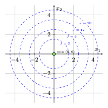
The optimiser searches for the level curve with the smallest possible \(c\). Geometrically, this is the centre of the concentric circles.
In most engineering applications, particularly MPC, we are restricted. Valves cannot open more than 100%, and tanks cannot hold negative volume. This leads to constrained optimisation, where \(x\) must belong to a specific feasible set \(S\). We classify these based on how the set \(S\) is defined.
An equality constrained problem restricts the decision variables to lie strictly on a specific curve or surface (\(h(x)=0\)). The solver is not allowed to choose any point off this line. Mathematically, this reduces the dimension of the search space.
Equality Constraints: The Tangent Point Problem Statement: Minimise the same quadratic function as before, but subject to a linear equality constraint.
\[\begin{equation*} \begin{aligned} & \min_{x} \quad J(x) = x_1^2 + x_2^2 \\ \text{subject to:} &\\ & h(x) = x_1 + 2x_2 - 4 = 0 \end{aligned} \end{equation*}\]
Visualisation: This problem is visualised in Figure [fig:optimization_with_constraints].
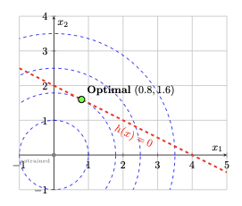
.The optimal point is found where the constraint line is exactly tangent to a level curve.
Unlike equality constraints, inequality constraints confine the solution to a region (a set of alternatives). The optimal solution may lie on the boundary of this region (active constraint) or strictly inside it (inactive constraint).
Inequality Constraints: The Feasible Region Minimise the cost function \(J(x) = x_1^2 + x_2^2\), subject to four linear inequalities: \[\begin{aligned} -x_1 - 2x_2 + 5 &\leq 0 \\ 2x_1 + x_2 - 5 &\leq 0 \\ x_1 \ge 0, \ x_2 &\ge 0 \end{aligned}\]
Visualisation is excellent for understanding, but to get numerical answers, we use software. In this course, we utilise YALMIP, an open source MATLAB toolbox that allows us to write optimisation problems using syntax that looks almost identical to the mathematics.
The workflow always follows three steps:
Define Optimisation Variables \(\to\) Define Model \(\to\) Solve.
% 'sdpvar' creates a symbolic variable that YALMIP tracks.
x = sdpvar(2,1);
% 2. Define the Objective Function
J = x(1)^2 + x(2)^2;
% 3. Define Constraints
% We create a list of inequalities using standard MATLAB brackets.
Constraints = [ -x(1) - 2*x(2) + 5 <= 0, ...
2*x(1) + x(2) - 5 <= 0, ...
x(1) >= 0, ...
x(2) >= 0 ];
% 4. Call the Solver
% We ask YALMIP to minimise J subject to Constraints
optimize(Constraints, J);
% 5. Extract Result
% The symbolic variable 'x' now holds the optimal value.
x_star = value(x) % Result: (1, 2)# Minimise x1^2 + x2^2 subject to inequality constraints
# Try changing the objective or constraint coefficients!
def objective(x):
return x[0]**2 + x[1]**2
# Constraints (scipy convention: c(x) >= 0)
constraints = [
{'type': 'ineq', 'fun': lambda x: x[0] + 2*x[1] - 5}, # x1 + 2x2 >= 5
{'type': 'ineq', 'fun': lambda x: -2*x[0] - x[1] + 5}, # 2x1 + x2 <= 5
]
bounds = [(0, None), (0, None)]
result = minimize(objective, x0=[1, 1], method='SLSQP',
bounds=bounds, constraints=constraints)
print(f”Optimal x* = ({result.x[0]:.4f}, {result.x[1]:.4f})”)
print(f”Minimum cost J = {result.fun:.4f}”)Visualisation: Geometrically, the optimiser “expands” the level curves (blue circles) from the origin until they first touch the feasible region (grey polygon).
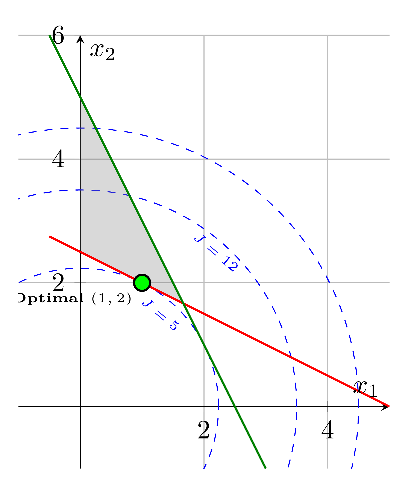
In the most general case, a problem contains both equality and inequality constraints. The solver must find a solution that lies inside the inequality region and lies exactly on the equality curve.
Geometrically, the feasible set is the intersection of the regions defined by all constraints. This often effectively reduces the dimensionality of the search space.
General Constraints: Mixing Equalities and Inequalities Problem Statement: Consider a scenario where we must satisfy both safety limits (inequalities) and strict physical laws (equalities). We wish to minimise the quadratic cost \(J(x) = x_1^2 + x_2^2\) subject to: \[\begin{equation*} \begin{aligned} \text{s.t.} \quad & -x_1 - 2x_2 + 5 \leq 0 \\ & 2x_1 + x_2 - 5 \leq 0 \\ & x_1 \ge 0, \quad x_2 \ge 0 \\ & x_1 + 2x_2 - 7 = 0 \quad {(Equality)} \end{aligned} \end{equation*}\]
YALMIP Implementation: When translating this into code, pay close attention to the syntax for the equality constraint. In MATLAB, a single equals sign (=) represents assignment (e.g., setting a variable’s value). To represent a logical equality condition (\(h(x)=0\)), we must use the double equals sign (==).
x = sdpvar(2,1);
J = x(1)^2 + x(2)^2;
% 2. Define Inequality Constraints (The Feasible Region)
g1 = [-x(1) - 2*x(2) + 5 <= 0];
g2 = [ 2*x(1) + x(2) - 5 <= 0];
g3 = [x(1) >= 0];
g4 = [x(2) >= 0];
% 3. Define Equality Constraint (The Manifold)
% Note the use of '==' for logical equality
h = [x(1) + 2*x(2) - 7 == 0];
% 4. Combine and Solve
Constraints = [g1, g2, g3, g4, h];
optimize(Constraints, J);
x_star = value(x) % Result: (1, 3)# Mixed constraints: inequalities + equality
# Try changing the equality constraint value (e.g. 6 instead of 7)
def objective(x):
return x[0]**2 + x[1]**2
ineq_constraints = [
{'type': 'ineq', 'fun': lambda x: x[0] + 2*x[1] - 5},
{'type': 'ineq', 'fun': lambda x: -2*x[0] - x[1] + 5},
]
# Equality: x1 + 2*x2 = eq_rhs
eq_rhs = 7
eq_constraint = {'type': 'eq', 'fun': lambda x: x[0] + 2*x[1] - eq_rhs}
bounds = [(0, None), (0, None)]
all_constraints = ineq_constraints + [eq_constraint]
result = minimize(objective, x0=[1, 1], method='SLSQP',
bounds=bounds, constraints=all_constraints)
print(f"Optimal x* = ({result.x[0]:.4f}, {result.x[1]:.4f})")
print(f"Minimum cost J = {result.fun:.4f}")
print(f"Equality check: x1 + 2x2 = {result.x[0]+2*result.x[1]:.4f}")Visualisation and Analysis: The geometry of this problem is illustrated in Figure [fig:Intersection_of_constraints].
The inequalities form the grey triangular region.
The equality constraint is represented by the orange dashed line.
A valid solution must satisfy both conditions. Therefore, the feasible set is reduced to the specific line segment where the orange line slices through the grey triangle.
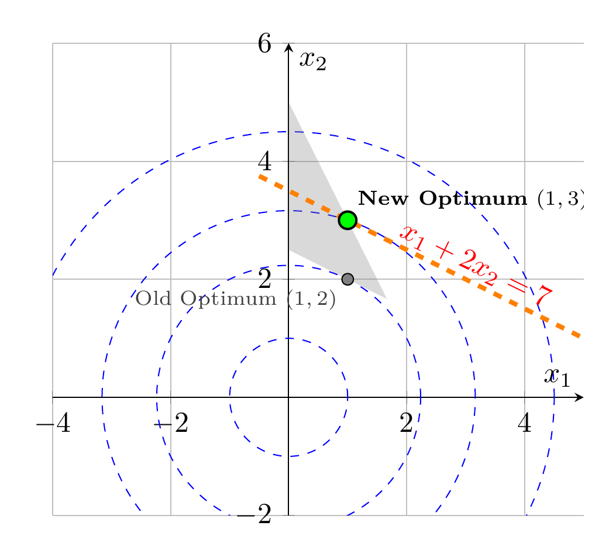
The Cost of Constraints: In the previous example (inequalities only), the optimiser could reach the point \((1,2)\), which yielded a cost of \(J=5\).
However, the new equality constraint forces the solution to lie on the line \(x_1 + 2x_2 = 7\). The point \((1,2)\) is no longer valid because \(1 + 2(2) = 5 \neq 7\). The solver is forced to move further away from the origin to satisfy this new rule, settling at \((1,3)\) with a higher cost of \(J=10\).
This illustrates a fundamental rule of engineering optimisation: Adding constraints generally worsens (increases) the minimum cost, as it restricts the freedom of the solver to find "cheaper" solutions.
Optimisation problems vary greatly in difficulty depending on the structure of their objective functions and constraints. In this section we review some of the most commonly encountered problem classes, beginning with those that are considered easy from a computational point of view, and progressing to problems that are, in general, far more challenging to solve.
Linear Programmes constitute one of the most fundamental classes of convex optimisation problems. Both the objective and the constraints are linear: \[\begin{align*} &\min_{x} \; c^{\top} x \\ \text{subject to: } & \\ &Gx \le h \\ &Ax = b \end{align*}\]
The feasible set of an LP is a polyhedron, and the optimum, when it exists, is attained at an extreme point (vertex) of this polyhedron. Linear optimisation on a polytope may be visualised as shifting parallel hyperplanes of constant cost until they touch the feasible region. Figure 1.5 shows a 2D example where the polytope corresponds to the closed area modelled by \(Gx\le h\) and dashed lines shows the cost for different values of \(c^\top x\).
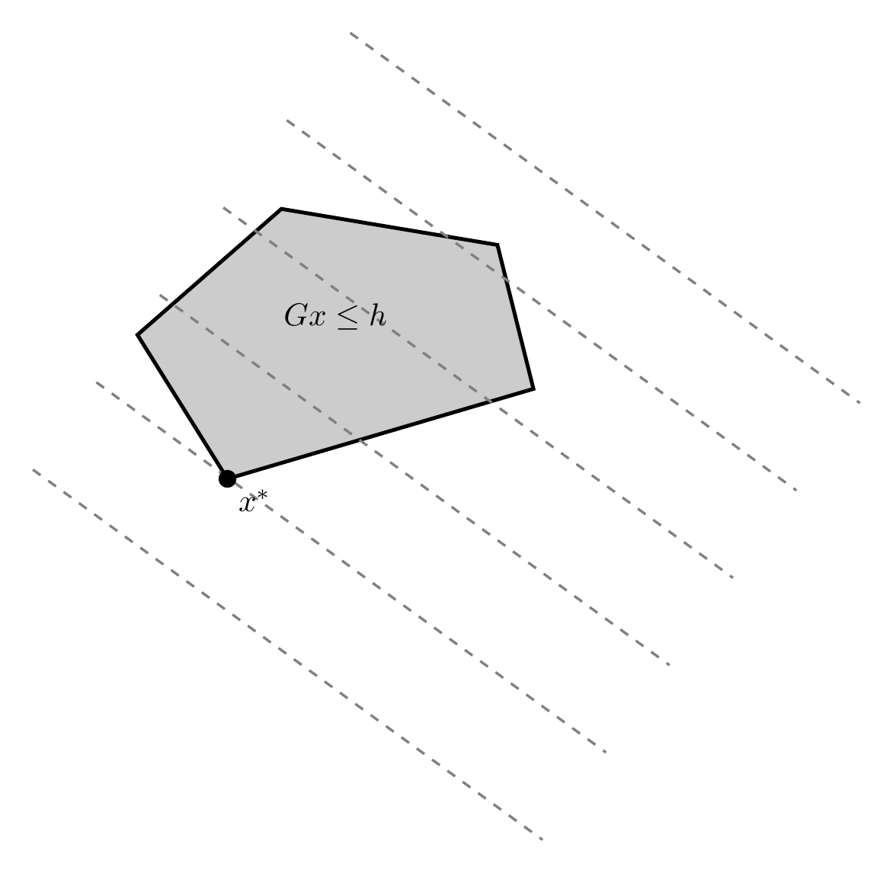
Linear Programme: Minimum-Effort Steady State
The Goal: Consider a discrete-time linear system \[x_{k+1} = Ax_k + Bu_k\] We wish to find a steady-state pair \((x_{\mathrm{ss}}, u_{\mathrm{ss}})\) (an equilibrium point where the system stays at rest (\(x_{k+1} = x_k\))) subject to safety constraints.
Crucially, among all possible valid equilibria, we want to find the one that requires the least control effort. In engineering (e.g., satellite thrusters), "effort" is often quantified by fuel consumption, which corresponds to the sum of the absolute values of the inputs.
1. The 1-Norm and Notation: Mathematically, we want to minimise the 1-norm of the input vector \(u \in \mathbb{R}^m\): \[\begin{equation} \|u\|_1 = \sum_{i=1}^{m} |u_i| = |u_1|+|u_2|+\cdots + |u_m| \end{equation}\] However, the absolute value function \(|u|\) is non-linear. Standard LP solvers cannot handle it directly. To solve this, we use a standard optimisation trick involving the vector \(1\).
Let \(1\) be a column vector of ones: \(1 = [1, 1, \dots, 1]^\top\).
Then \(1^\top t\) is simply the sum of the elements of vector \(t\): \(\sum t_i\).
2. The Epigraph Trick: We introduce an auxiliary decision vector \(t \in \mathbb{R}^m\). We constrain \(t\) to be an upper bound on the magnitude of \(u\): \[\begin{equation} -t_i \le u_i \le t_i \implies |u_i| \le t_i \end{equation}\] If we minimise the sum of elements in \(t\) (i.e., \(\min 1^\top t\)), the solver will squeeze \(t_i\) down until \(t_i = |u_i|\). This effectively minimises \(|u_i|\) using only linear inequalities.
3. The Formulation: We can now pose the full Linear Programme. The decision variables are the input \(u\), the state \(x_{\mathrm{ss}}\), and the auxiliary bound \(t\).
\[\begin{aligned} &\min_{u,\, x_{\mathrm{ss}},\, t} \quad 1^\top t && \text{(Minimise total fuel/effort)}\\ \text{subject to:} &&& \\ & (I-A)x_{\mathrm{ss}} - Bu = 0, && \text{(Equilibrium Physics)}\\ & G\,x_{\mathrm{ss}} \le h, && \text{(Safety Constraints)}\\ & u_{\min} \le u \le u_{\max}, && \text{(Actuator Limits)}\\ & -t \le u \le t. && \text{(Norm Linearisation)} \end{aligned}\]
This formulation allows us to find the most efficient operating point for the system using extremely fast and reliable Linear Programming solvers.
Stigler’s Diet Problem:
The Stigler Diet Problem is a classic linear optimisation problem. The objective is to determine the most cost-effective daily diet that meets specific nutritional requirements using a limited set of foods.
In this simplified 2D version, we consider two food items: Corn and Wheat Bread. We aim to minimise the total daily cost while satisfying constraints for Energy (Calories) and Vitamin A.
We first define the problem using general parameters and units.
Decision Variables:
\(x_1\): Quantity of Corn [kg]
\(x_2\): Quantity of Bread [kg]
Parameters:
\(c_1, c_2\): Price of food [$/kg]
\(k_1, k_2\): Energy content [kcal/kg]
\(v_1, v_2\): Vitamin A content [\(\mu\)g/kg]
\(K_{min}, K_{max}\): Daily energy limits [kcal]
\(V_{min}, V_{max}\): Daily Vitamin A limits [\(\mu\)g]
Optimisation Model: \[\begin{align*} \underset{x_1,\,x_2}{\text{min}} \quad & J(x) = c_1 x_1 + c_2 x_2 \\ \text {Subject to:} \quad & K_{min} \leq k_1 x_1 + k_2 x_2 \leq K_{max} \\ & V_{min} \leq v_1 x_1 + v_2 x_2 \leq V_{max} \\ & x_1 \geq 0, \quad x_2 \geq 0 \end{align*}\]
Using the specific data provided for the problem:
Data:
Costs: \(c_1 = 2.0\), \(c_2 = 0.5\)
Energy: \(k_1 = 750\), \(k_2 = 650\) (Target: \(2000 - 3000\) kcal)
Vitamin A: \(v_1 = 250\), \(v_2 = 0\) (Target: \(500 - 800\) \(\mu\)g)
Numerically, the problem can be stated as follows:
\[\begin{align*} &\underset{x_1,x_2}{\min } \quad J(x) = 2x_1 + 0.5x_2 & \\ \text{Subject to:} &&\\ &2000 \leq 750x_1 + 650x_2 \leq 3000 & \text{(Energy)} \\ &500 \leq 250x_1 \phantom{{} + 650x_2} \leq 800 & \text{(Vitamin A)} \\ & x_1 \geq 0, \quad x_2 \geq 0 & \text{(Nonnegativity)} \end{align*}\] Figure 1.6 shows the feasible solution set along with the optimal solution that minimises the cost of nutrition.
clear; clc;
x1 = sdpvar(1); % Corn (kg)
x2 = sdpvar(1); % Bread (kg)
Objective = 2*x1 + 0.5*x2;
% 3. Define Constraints
Constraints = [];
Constraints = [Constraints, 2000 <= 750*x1 + 650*x2 <= 3000];
Constraints = [Constraints, 500 <= 250*x1 <= 800];
Constraints = [Constraints, x1 >= 0, x2 >= 0];
% 'linprog' for LP; use 'quadprog' or 'osqp' for QP/SOCP variants.
options = sdpsettings('verbose', 0, 'solver', 'linprog');
sol = optimize(Constraints, Objective, options);
if sol.problem == 0
fprintf('Optimal Solution:\n');
fprintf('x1 (Corn) : %.4f kg\n', value(x1));
fprintf('x2 (Bread): %.4f kg\n', value(x2));
fprintf('Min Cost : $%.4f\n', value(Objective));
else
disp('Problem could not be solved.');
end# Stigler's Diet Problem (LP)
# Try changing costs or nutrient requirements!
# Costs per kg
cost_corn = 2.0
cost_bread = 0.5
c = [cost_corn, cost_bread]
# Nutrient data: [energy/kg, vitA/kg]
# Corn: 750 kcal, 250 ug VitA
# Bread: 650 kcal, 0 ug VitA
energy_min, energy_max = 2000, 3000 # kcal
vitA_min, vitA_max = 500, 800 # ug
A_ub = [
[-750, -650], # energy >= 2000
[ 750, 650], # energy <= 3000
[-250, 0], # vitA >= 500
[ 250, 0], # vitA <= 800
]
b_ub = [-energy_min, energy_max, -vitA_min, vitA_max]
result = linprog(c, A_ub=A_ub, b_ub=b_ub, bounds=[(0, None), (0, None)])
print(f"x1 (Corn) = {result.x[0]:.4f} kg")
print(f"x2 (Bread) = {result.x[1]:.4f} kg")
print(f"Min Cost = ${result.fun:.4f}")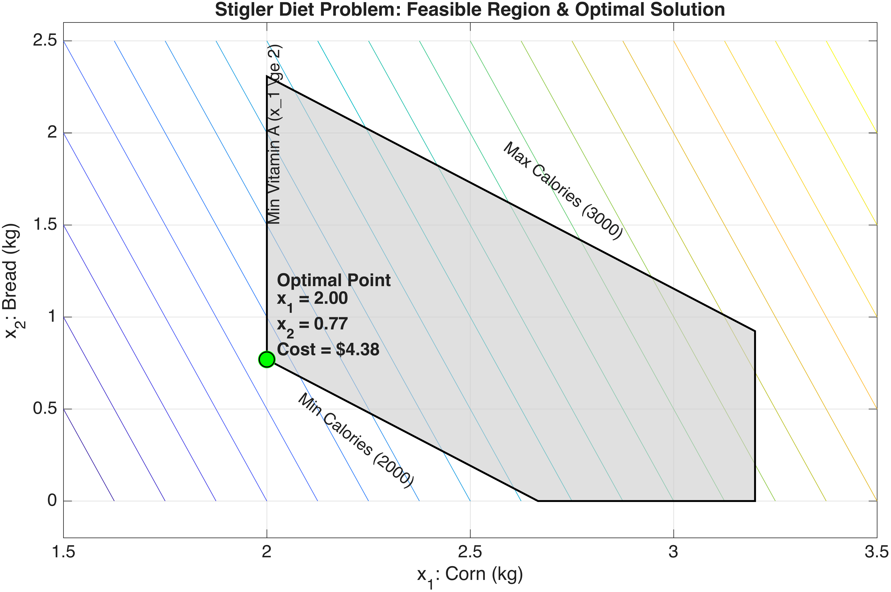
Quadratic Programmes (QPs) extend linear optimisation by allowing a quadratic objective function whilst retaining linear equality and inequality constraints. A QP takes the general form \[\begin{align*} &\min_{x} \quad \frac{1}{2} x^{\top} P x + q^{\top} x \\ \text{subject to: } & \\ & Gx \le h \\ & Ax = b \end{align*}\]
where, \(x\in \mathbb R^n\), \(P \in \mathbb{R}^{n \times n}\), \(q \in \mathbb{R}^n\), \(G \in \mathbb{R}^{m \times n}\), and \(A \in \mathbb{R}^{p \times n}\). The feasible region defined by the linear constraints is always a polyhedron.
The QP is convex if and only if the Hessian matrix \(P\) is positive semidefinite: \[P \succeq 0 .\] This is shown in Figure 1.7.
Tests for Positive Semidefiniteness (\(P \succeq 0\)) For a symmetric matrix \(P\), the following statements are equivalent and may be used to verify that \(P\) is positive semidefinite:
Eigenvalues: All eigenvalues of \(P\) are non-negative: \[\lambda_i(P) \ge 0, \qquad i=1,\dots,n.\]
Quadratic Form: The quadratic form is non-negative for every vector \(z \in \mathbb{R}^n\): \[z^\top P z \ge 0, \qquad \forall z \in \mathbb{R}^n.\]
Principal Minors: All principal minors of \(P\) are non-negative. In other words, the determinant of every principal submatrix must satisfy \[\det(P_{\mathcal I,\mathcal I}) \ge 0\] for every index set \(\mathcal I \subseteq \{1,\dots,n\}\).
Important note: For positive definite matrices \((P \succ 0)\), Sylvester’s criterion states that it is enough to check that all leading principal minors are strictly positive. However, for positive semidefinite matrices \((P \succeq 0)\), checking only the leading principal minors is not sufficient in general; one must check all principal minors, or use one of the equivalent tests above.
(For a review of eigenvalues, definiteness, and related matrix concepts, see Appendix [app:linalg].)
Hessian The Hessian matrix, denoted as \(\nabla^2 f(x)\) or \(H(x)\), collects all second-order partial derivatives of a scalar-valued function \(f: \mathbb{R}^n \to \mathbb{R}\). If \(x = [x_1, x_2, \dots, x_n]^\top\), the element in the \(i\)-th row and \(j\)-th column is given by: \[\begin{equation*} H_{ij} = \dfrac{\partial^2 f}{\partial x_i \partial x_j} \end{equation*}\]
Example: Hessian Consider a simple function of two variables: \[f(x) = 3x_1^2 + 2x_1 x_2 + 5x_2^2\] First, we find the gradient (first derivatives): \[\dfrac{\partial f}{\partial x_1} = 6x_1 + 2x_2, \quad \dfrac{\partial f}{\partial x_2} = 2x_1 + 10x_2\] Differentiating again gives the Hessian matrix: \[H = \begin{bmatrix} \dfrac{\partial^2 f}{\partial x_1^2} & \dfrac{\partial^2 f}{\partial x_1 \partial x_2} \\[12pt] \dfrac{\partial^2 f}{\partial x_2 \partial x_1} & \dfrac{\partial^2 f}{\partial x_2^2} \end{bmatrix} = \begin{bmatrix} 6 & 2 \\ 2 & 10 \end{bmatrix}\] Note that for smooth functions, the Hessian is always a symmetric matrix (\(H_{ij} = H_{ji}\)).
In the strictly convex case (where \(P \succ 0\)), the level sets of the objective function form concentric ellipses. This structure guarantees that the optimisation problem yields a unique global minimiser, provided the feasible region is non-empty.
Geometrically, the solver searches for the smallest possible ellipse that still overlaps with the constraints. The optimal solution is found at the precise point where this lowest-cost contour touches (or grazes) the feasible polytope. This graphical interpretation is illustrated in Figure 1.7.
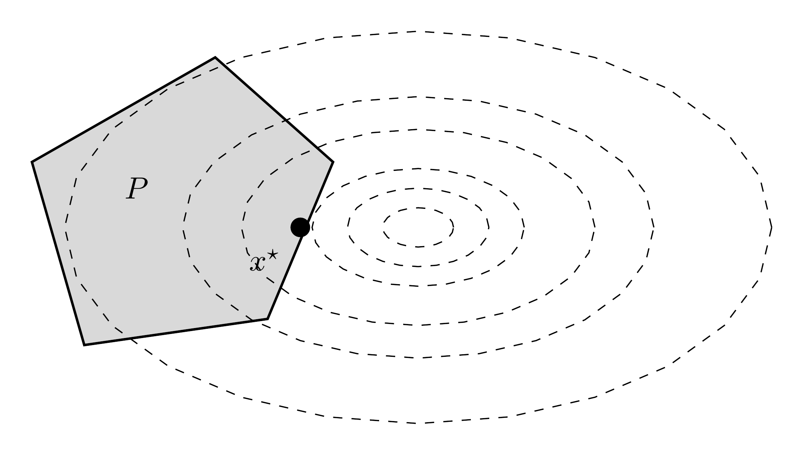
Convex QPs benefit from strong theoretical guarantees and can be solved efficiently using interior-point, active-set, or first-order optimisation methods. They are widely used in control, signal processing, finance, estimation, and engineering design.
Example: Robot Distance to a Restricted Zone Scenario: Let a robot is located at coordinates \(p = (3, 2)\). A restricted geometric zone \(\mathcal{X}\) (representing an obstacle or a target landing pad) is defined as a unit box centered at the origin. The robot must compute the shortest distance to this zone to plan its trajectory.
Optimisation Problem: Find the point \(x \in \mathcal{X}\) closest to \(p\): \[\begin{equation*} \min_{x \in \mathbb{R}^2} \; (x_1 - 3)^2 + (x_2 - 2)^2 \end{equation*}\]
Constraints (Standard Format): The unit box is defined by bounds \(-1 \leq x_1 \leq 1\) and \(-1 \leq x_2 \leq 1\). In standard linear inequality form \(Ax \leq b\), these are written as: \[\begin{align*} x_1 &\leq 1 \\ -x_1 &\leq 1 \\ x_2 &\leq 1 \\ -x_2 &\leq 1 \end{align*}\]
Visualising the Solution: By inspecting the geometry (see Figure [fig:qp_distance]), the closest point within the box to \((3,2)\) is the upper-right corner of the box, \(x^* = (1, 1)\).
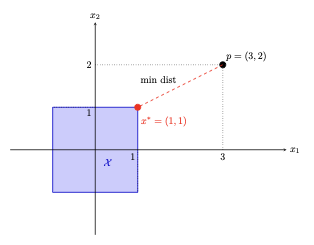
To solve this problem numerically using a solver (like OSQP, quadprog, or GUROBI), we must map the problem into the standard Quadratic Programming form: \[\begin{equation} \min_{x} \; \frac{1}{2} x^\top P x + q^\top x \quad \text{subject to} \quad Gx \leq h \end{equation}\]
We expand the squared Euclidean distance objective: \[\begin{align*} J(x) &= (x_1 - 3)^2 + (x_2 - 2)^2 \\ &= (x_1^2 - 6x_1 + 9) + (x_2^2 - 4x_2 + 4) \\ &= \underbrace{x_1^2 + x_2^2}_{\text{Quadratic part}} \underbrace{- 6x_1 - 4x_2}_{\text{Linear part}} + \underbrace{13}_{\text{Constant}} \end{align*}\] The constant term (\(13\)) does not affect the optimal location \(x^*\) and is discarded. To match the standard form \(\frac{1}{2} x^\top P x\), the matrix \(P\) must be scaled such that the diagonal elements are 2. \[\frac{1}{2} \underbrace{\begin{bmatrix} x_1 & x_2 \end{bmatrix}}_{x^\top} \underbrace{\begin{bmatrix} 2 & 0 \\ 0 & 2 \end{bmatrix}}_{P} \underbrace{\begin{bmatrix} x_1 \\ x_2 \end{bmatrix}}_{x} + \underbrace{\begin{bmatrix} -6 & -4 \end{bmatrix}}_{q^\top} \begin{bmatrix} x_1 \\ x_2 \end{bmatrix}\] Thus, we define: \[P = \begin{bmatrix} 2 & 0 \\ 0 & 2 \end{bmatrix}, \quad q = \begin{bmatrix} -6 \\ -4 \end{bmatrix}\]
The unit box constraints are: \[-1 \leq x_1 \leq 1 \quad \text{and} \quad -1 \leq x_2 \leq 1\] These must be rewritten as "less than or equal to" inequalities (\(Gx \leq h\)): \[\begin{align*} x_1 &\leq 1 \\ -x_1 &\leq 1 \\ x_2 &\leq 1 \\ -x_2 &\leq 1 \end{align*}\] In matrix notation, this becomes: \[\underbrace{\begin{bmatrix} 1 & 0 \\ -1 & 0 \\ 0 & 1 \\ 0 & -1 \end{bmatrix}}_{G} \begin{bmatrix} x_1 \\ x_2 \end{bmatrix} \leq \underbrace{\begin{bmatrix} 1 \\ 1 \\ 1 \\ 1 \end{bmatrix}}_{h}\]
Having derived the standard QP matrices manually, we can now solve the problem using MATLAB. The following code demonstrates YALMIP’s symbolic framework to automate the process.
clear; clc;
ops = sdpsettings('solver', 'quadprog', 'verbose', 0);
p = [3; 2]; % Robot position
x = sdpvar(2, 1); % Variable
Objective = (x(1) - p(1))^2 + (x(2) - p(2))^2;
Constraints = [-1 <= x <= 1];
optimize(Constraints , Objective, ops);
x_opt = value(x);
fprintf('Optimal Sol : x1=%.2f, x2=%.2f\n', x_opt(1), x_opt(2));While YALMIP offers a convenient high-level interface, it is essential to understand how to pass the problem matrices directly to a solver. This effectively opens the "black box" of the optimisation tool.
In MATLAB, the native solver quadprog2 solves problems of the form: \[\begin{equation*}
\min_x \frac{1}{2}x^\top H x + f^\top x \quad \text{subject to} \quad A x \leq b
\end{equation*}\] This syntax requires a direct mapping from our mathematical notation (\(P, q, G, h\)) to MATLAB’s standard arguments (\(H, f, A, b\)).
clear; clc;
% 1. Map the Mathematical Notation to MATLAB Syntax
% Objective: 1/2 * x'*P*x + q'*x
H = [2, 0;
0, 2]; % Our Matrix P
f = [-6; -4]; % Our Vector q
% Constraints: G*x <= h
A = [ 1, 0;
-1, 0;
0, 1;
0, -1]; % Our Matrix G
b = [1; 1; 1; 1]; % Our Vector h
% 2. Set Options (optional, to suppress command window output)
options = optimoptions('quadprog', 'Display', 'off');
% 3. Call the Solver
% Syntax: x = quadprog(H, f, A, b)
x_opt = quadprog(H, f, A, b, [], [], [], [], [], options);
% 4. Display Results
fprintf('Optimal Sol : x1=%.2f, x2=%.2f\n', x_opt(1), x_opt(2));# Robot Distance to a Restricted Zone
# Try moving the robot or changing the box size!
robot_pos = np.array([3.0, 2.0]) # robot location
box_lo, box_hi = -1.0, 1.0 # box bounds
def objective(x):
return (x[0] - robot_pos[0])**2 + (x[1] - robot_pos[1])**2
bounds = [(box_lo, box_hi), (box_lo, box_hi)]
result = minimize(objective, x0=[0, 0], method='SLSQP', bounds=bounds)
dist = np.sqrt(result.fun)
print(f"Closest point: x* = ({result.x[0]:.2f}, {result.x[1]:.2f})")
print(f"Distance = {dist:.4f}")Not all optimisation problems retain convexity. Once convexity is lost, global optimality becomes substantially harder to guarantee. While standard MPC relies on convex optimisation, certain control formulations lead to nonconvex problems. A specific class of these "hard" problems is the Nonconvex Quadratic Programme (QP).
When the matrix \(P\) in the quadratic objective is not positive semidefinite (\(P \not\succeq 0\)), the objective function is nonconvex. This often manifests as saddle-shaped level sets. Consequently, the feasible polytope may contain multiple local minima, making the global optimum difficult to find efficiently.
The formulation is given by: \[\begin{align*} &\min_x \quad \frac{1}{2} x^{\top} Px + q^{\top} x\\ \text{subject to: }& \\ &Gx \le h \\ & Ax = b \end{align*}\]
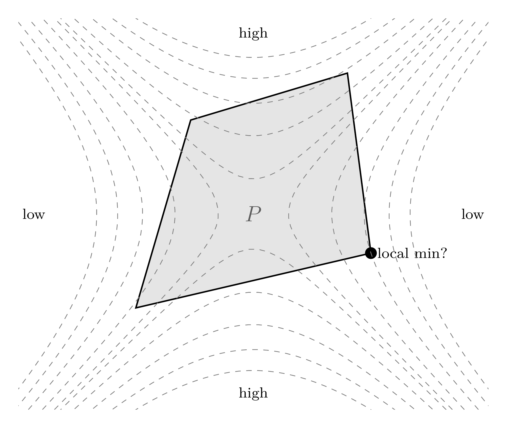
A Mixed-Integer Linear Programme retains the linear objective and constraints of an LP but imposes integrality restrictions on some or all decision variables: \[\begin{align*} &\min_{x} \quad c^{\top} x \\ \text{subject to: } & \\ &Gx \le h \\ &Ax = b \\ &x \in \{0,1\}^n \;\; \text{or} \;\; x \in \mathbb{Z}^n . \end{align*}\]
The feasible set becomes a set of discrete points embedded within a polyhedron, leading to a combinatorial explosion in complexity. Figure 1.9 shows a sketch of a possible mixed-integer problem.
MILP: Industrial Energy Management
The General Problem: Consider an industrial site supplied by the electrical grid and equipped with a dispatchable generator and a battery energy storage system. The objective is to minimise the total operating cost over a finite horizon of \(N\) discrete time steps of duration \(\Delta t\), while meeting the site demand and respecting operational constraints.
The generator can be switched on or off and incurs both fuel and start-up costs. The battery is subject to energy dynamics and cannot charge and discharge simultaneously.
For each time step \(k=1,\dots,N\), define: \[\begin{align*} p_g(k) &\ge 0 && \text{generator power (kW)},\\ p_{\mathrm{grid}}(k) &\ge 0 && \text{grid import power (kW)},\\ p_{\mathrm{ch}}(k),\, p_{\mathrm{dis}}(k) &\ge 0 && \text{battery charge/discharge power (kW)},\\ E(k) & && \text{battery energy (kWh)},\\ u(k) &\in \{0,1\} && \text{generator on/off status},\\ s(k) &\in \{0,1\} && \text{generator start-up indicator},\\ z(k) &\in \{0,1\} && \text{battery charge mode indicator}. \end{align*}\]
Objective function: The total operating cost is given by \[\begin{equation} \min \sum_{k=1}^{N} \Delta t \left( c_{\mathrm{grid}}(k)\,p_{\mathrm{grid}}(k) + c_f\,p_g(k) \right) + \sum_{k=1}^{N} c_{\mathrm{start}}\, s(k), \end{equation}\] where \(c_{\mathrm{grid}}(k)\) denotes the time-varying electricity price, \(c_f\) the generator fuel cost coefficient, and \(c_{\mathrm{start}}\) the generator start-up cost.
Constraints:
Power balance: \[\begin{equation} p_{\mathrm{grid}}(k) + p_g(k) + p_{\mathrm{dis}}(k) - p_{\mathrm{ch}}(k) = d(k), \quad \forall k. \end{equation}\] The term \(d(k)\) represents the exogenous electrical demand (load) of the system at time step \(k\), assumed to be known over the prediction horizon.
Generator operating limits: \[\begin{equation} P_{g,\min} u(k) \le p_g(k) \le P_{g,\max} u(k), \quad \forall k. \end{equation}\]
Generator start-up logic: \[\begin{align} s(1) &\ge u(1),\\ s(k) &\ge u(k) - u(k-1), \quad k=2,\dots,N. \end{align}\] where \(s(k)\) is a binary variable that equals one if the generator is started at time \(k\), i.e. when the on/off status \(u(k)\) transitions from 0 to 1.
Battery energy dynamics: \[\begin{equation} E(k+1) = E(k) + \Delta t\,\eta_{\mathrm{ch}}\,p_{\mathrm{ch}}(k) - \Delta t\,\frac{1}{\eta_{\mathrm{dis}}}\,p_{\mathrm{dis}}(k), \end{equation}\] with \(E(1)=E_0\). Also, \(\eta_{\mathrm{ch}}\in(0,1]\) and \(\eta_{\mathrm{dis}}\in(0,1]\) denote the charging and discharging efficiencies of the battery, respectively.
Battery and grid limits: \[\begin{align} E_{\min} &\le E(k) \le E_{\max},\\ 0 &\le p_{\mathrm{ch}}(k) \le P_{\mathrm{ch},\max},\\ 0 &\le p_{\mathrm{dis}}(k) \le P_{\mathrm{dis},\max},\\ 0 &\le p_{\mathrm{grid}}(k) \le P_{\mathrm{grid},\max}. \end{align}\]
Nonsimultaneous charging and discharging: \[\begin{align} p_{\mathrm{ch}}(k) &\le P_{\mathrm{ch},\max} z(k),\\ p_{\mathrm{dis}}(k) &\le P_{\mathrm{dis},\max} [1-z(k)]. \end{align}\]
Solving this problem: The model above is a Mixed-Integer Linear Programme (MILP) due to the binary variables \(u(k), s(k), z(k)\). It requires specialised solvers like Gurobi or CPLEX. In the software section later, we will implement a simplified version of this (a continuous LP) to demonstrate the concept in MATLAB.
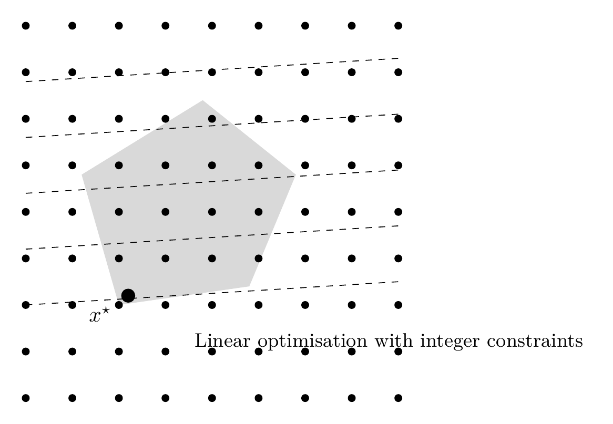
Implementing Model Predictive Control (MPC) requires a robust software stack. Generally, the implementation workflow is divided into two distinct layers:
Parsers (Modeling Languages): High-level interfaces that allow the user to define the optimisation problem using intuitive algebraic syntax (e.g., x^2 + y^2 <= 1). The parser translates this symbolic representation into the standard numerical matrix formats required by the solver.
Solvers: The low-level numerical engines that perform the mathematical iterations to find the optimal solution (e.g., Active-Set methods or Interior-Point methods).
Choosing the right parser depends heavily on the programming environment (MATLAB vs. Python) and the type of problem (Convex vs. Nonlinear).
For MATLAB users, YALMIP is the de facto standard for prototyping. It supports a vast array of solvers and allows users to switch between them by changing a single line of code. CVX is another popular option, specifically designed for Disciplined Convex Programming (DCP), a methodology that requires users to compose their optimisation problems from a fixed library of convex functions and composition rules so that convexity is automatically verified.
For Python users, CVXPY is the equivalent of CVX, providing a clean object-oriented interface for convex problems.
For Nonlinear MPC (NMPC) and high-performance applications, CasADi is widely used in both Python and MATLAB. Unlike standard parsers, CasADi implements Algorithmic Differentiation (AD), allowing it to compute exact gradients and Hessians automatically, which is critical for solving nonlinear control problems efficiently.
| Name | Platform | License | Primary Purpose & Notes |
|---|---|---|---|
| YALMIP | MATLAB | Free | The Swiss Army Knife of MATLAB optimisation. Excellent for prototyping QP, LP, SDP, and MIP. |
| CVX | MATLAB | Free | Enforces Disciplined Convex Programming (DCP). Guarantees convexity but stricter than YALMIP. |
| CVXPY | Python | Free (Apache) | The standard for convex optimisation in Python. Intuitive object-oriented syntax. |
| CasADi | Python/C++ | Free (LGPL) | Ideal for Nonlinear MPC (NMPC). Features algorithmic differentiation and C-code generation for embedded targets. |
| Pyomo | Python | Free (BSD) | General modelling language, widely used in Operations Research (OR) and process systems engineering. |
| JuMP | Julia | Free (MIT) | Extremely fast modelling language. Gaining significant popularity in the control community. |
The choice of solver is dictated by the problem class and the deployment requirements.
For linear MPC, we typically solve a Quadratic Programme (QP). Solvers like OSQP (Operator Splitting Quadratic Programme) and quadprog are popular because they are robust, code-generatable, and solve for moderate accuracy very quickly. qpOASES is an active-set solver specifically designed for MPC; it uses "warm-starting" to solve the next time-step’s problem almost instantly based on the previous solution.
For commercial applications, Gurobi and CPLEX are the industry leaders, offering unmatched speed for large-scale Mixed-Integer (MIP) and convex problems.
If the MPC formulation involves ellipsoidal constraints (Robust MPC) or Linear Matrix Inequalities (LMIs), a Conic Solver is required. MOSEK is the industry leader for these types of problems (SOCP and SDP). For pure MATLAB-based research involving LMIs, SeDuMi remains a classic open-source option.
For Nonlinear MPC, IPOPT (Interior Point OPTimizer) is the standard open-source engine, often paired with CasADi.
| Solver | Type | Method | License | Best For |
|---|---|---|---|---|
| quadprog | QP | Interior-Point | Proprietary | Standard MATLAB solver (requires Opt. Toolbox). Primary solver used in this course. |
| OSQP | QP | ADMM3 | Free (Apache) | Embedded MPC. Very robust, division-free code; widely used in Python/Julia. |
| qpOASES | QP | Active-Set | Free (LGPL) | Small-to-medium MPC. Excellent warm-starting capabilities for dense problems. |
| Gurobi | LP, QP, MIP | Simplex/Barrier | Commercial | Gold standard for MIP and convex speed. Free academic licenses available. |
| MOSEK | SOCP, SDP | Interior-Point | Commercial | The leader for Robust MPC (Conic constraints) and Semidefinite programming. |
| SeDuMi | SDP, SOCP | Interior-Point | Free (GPL) | Established MATLAB solver for Linear Matrix Inequality(LMI)-based control and stability analysis. |
| IPOPT | NLP | Interior-Point | Free (EPL) | Large-scale nonlinear optimisation (NMPC). Standard engine for CasADi. |
| SNOPT | NLP | SQP | Commercial | Highly nonlinear, non-convex problems (e.g., aerospace trajectory planning). |
| ECOS | SOCP, LP | Interior-Point | Free (GPL) | Lightweight, embedded-friendly Second-Order Cone solver. |
Mathematical formulation is only half the battle. To deploy Model Predictive Control, we must translate these equations into code that a computer can solve. In this section, we explore a complex energy management system as an example.
In this example, we explore a sophisticated application of optimisation: Economic Energy Management. The goal here is purely economic: minimise the total cost of electricity over a 24-hour horizon.
Although the general problem formulation (the MILP discussed earlier) included complex generator logic, for this MATLAB example we will solve a simplified but highly relevant subset: Battery Energy Arbitrage.
Consider a home with:
Load (\(P_{load}\)): The household power consumption (lighting, appliances).
Solar Generation (\(P_{solar}\)): Free renewable energy available during the day.
Battery Storage: A unit capable of storing energy (\(E_{bat}\)) to bridge the gap between supply and demand.
Grid Connection: Allows buying power when needed or selling excess power.
The Challenge: Electricity prices fluctuate throughout the day (Time-of-Use pricing). Prices are low at night and high in the evening. We must decide the optimal battery charge/discharge schedule to minimise the daily bill.
We define the discrete time step \(\Delta t = 1\) hour and the horizon \(N=24\) hours.
1. Variables:
\(P_{grid}(k)\): Power exchanged with the grid (kW). Positive = Buy, Negative = Sell.
\(P_{bat}(k)\): Battery charging power (kW). Positive = Charge, Negative = Discharge.
\(E_{bat}(k)\): Energy stored in the battery (kWh).
2. The Objective Function: Minimise the cumulative cost of grid usage: \[\begin{equation} \min_{P_{bat}, P_{grid}} \sum_{k=0}^{N-1} \text{Price}(k) \times P_{grid}(k) \cdot \Delta t \end{equation}\]
3. Constraints: \[\begin{align} \text{Power Balance:} \quad & P_{grid}(k) + P_{solar}(k) = P_{load}(k) + P_{bat}(k) \\ \text{Dynamics:} \quad & E_{bat}(k+1) = E_{bat}(k) + P_{bat}(k) \cdot \Delta t \\ \text{Capacity Limits:} \quad & E_{min} \leq E_{bat}(k) \leq E_{max} \\ \text{Power Limits:} \quad & P_{min} \leq P_{bat}(k) \leq P_{max} \end{align}\]
We use YALMIP to translate this word problem into a numerical format. Since this problem is purely continuous, we solve it as a Linear Programme (LP) using quadprog (with zero quadratic cost) or linprog.
N = 24; % Horizon (24 hours)
E_cap = 13.5; % Battery Capacity (kWh, e.g., Tesla Powerwall)
P_max = 5; % Max Charge/Discharge rate (kW)
dt = 1; % Time step (1 hour)
% --- 2. Forecast Data (Profiles) ---
% Price: 0.10 (Off-peak), 0.30 (Peak: 17:00-21:00)
Price = 0.10 * ones(N,1); Price(18:21) = 0.30;
% Solar: Peak at noon (simple sine wave approx)
t = (0:N-1)';
Solar = max(0, 4 * sin(pi * (t - 6) / 12));
% Load: Peaks in morning and evening
Load = 1 + 2 * exp(-(t-19).^2/10) + 1 * exp(-(t-8).^2/5);
% --- 3. Optimisation Variables ---
P_grid = sdpvar(N, 1); % Grid Power
P_bat = sdpvar(N, 1); % Battery Power
E_bat = sdpvar(N+1, 1); % Battery State of Charge
% --- 4. Constraints Construction ---
C = [];
% Start with empty battery (Assumption for this specific day)
% In real MPC, E_bat(1) would equal the measured sensor value.
C = [C, E_bat(1) == 0];
for k = 1:N
% Dynamics: Energy integration
C = [C, E_bat(k+1) == E_bat(k) + P_bat(k) * dt];
% Power Balance: Supply (Grid+Solar) = Demand (Load+BatteryCharge)
C = [C, P_grid(k) + Solar(k) == Load(k) + P_bat(k)];
% Physical Constraints
C = [C, 0 <= E_bat(k+1) <= E_cap]; % Capacity limits
C = [C, -P_max <= P_bat(k) <= P_max]; % Power limits
end
% --- 5. Objective: Minimise Total Cost ---
Objective = Price' * P_grid;
% --- 6. Solve ---
ops = sdpsettings('solver','quadprog','verbose',0);
sol = optimize(C, Objective, ops);# Smart Grid Energy Management — try changing parameters!
N = 24 # horizon (hours)
E_cap = 13.5 # battery capacity (kWh, e.g. Tesla Powerwall)
P_max = 5.0 # max charge/discharge rate (kW)
# Price profile ($/kWh): off-peak vs peak
price_offpeak = 0.10
price_peak = 0.30
peak_start, peak_end = 17, 21
Price = price_offpeak * np.ones(N)
Price[peak_start:peak_end] = price_peak
# Solar generation (kW) — sinusoidal approximation
t = np.arange(N)
Solar = np.maximum(0, 4 * np.sin(np.pi * (t - 6) / 12))
# Load demand (kW) — morning + evening peaks
Load = 1 + 2*np.exp(-(t-19)**2/10) + np.exp(-(t-8)**2/5)
# ── Build LP: min Price' * P_grid ──
dt = 1.0
n_vars = 3*N + 1 # [P_grid, P_bat, E_bat]
c = np.zeros(n_vars)
c[0:N] = Price * dt
A_eq = np.zeros((2*N+1, n_vars))
b_eq = np.zeros(2*N+1)
for k in range(N):
A_eq[k, k] = 1; A_eq[k, N+k] = -1
b_eq[k] = Load[k] - Solar[k]
A_eq[N+k, 2*N+k] = -1; A_eq[N+k, N+k] = -dt; A_eq[N+k, 2*N+k+1] = 1
A_eq[2*N, 2*N] = 1 # E_bat(0) = 0
bounds = ([(None,None)]*N + [(-P_max,P_max)]*N + [(0,E_cap)]*(N+1))
result = linprog(c, A_eq=A_eq, b_eq=b_eq, bounds=bounds)
P_grid = result.x[0:N]
P_bat = result.x[N:2*N]
E_bat = result.x[2*N:]
print(f"Total daily cost: ${result.fun:.2f}")The result is best understood visually (Figure 1.10).
Pre-Charging: Notice that between 00:00 and 06:00, the battery charges (blue bars positive) even though the sun isn’t shining. It buys cheap electricity to store it.
Peak Shaving: During the peak price window (17:00–21:00), the battery discharges (blue bars negative). The optimiser "decided" to sell the stored energy to avoid paying the high grid price, drastically reducing the bill.
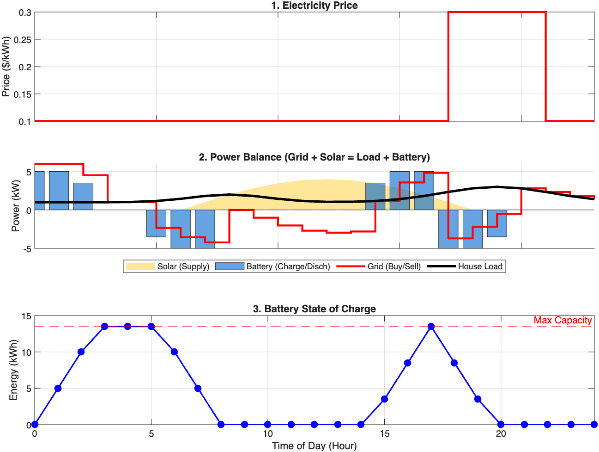
Optimisation is Translation: MPC translates qualitative engineering goals (e.g., “drive fast but don’t crash”) into quantitative mathematical statements (e.g., “minimise travel time subject to velocity limits”).
The Scalar Score: An algorithm cannot minimise a vector or a list of conflicting goals. The objective function \(J(x)\) serves to compress complex multi-variable decisions into a single scalar number (a cost), allowing different control strategies to be ranked and compared.
Constraints Define Reality: Unlike classical control, where saturation is often an afterthought, optimisation explicitly handles physical limitations. The feasible set is the intersection of all equality and inequality constraints. If this set is empty, the problem is infeasible, and no solution exists.
Convexity: The most critical property of an optimisation problem is convexity. If the objective function is convex (bowl-shaped) and the constraints form a convex set, any local minimum found is guaranteed to be the global minimum. This reliability is essential for safety-critical control systems.
Standard Forms:
LP (Linear Programme): Linear cost and constraints. extremely fast; used for economic dispatch and simple regulation.
QP (Quadratic Programme): Quadratic cost (energy/error) and linear constraints. This is the standard formulation for linear MPC.
MILP (Mixed-Integer): Contains discrete decisions (On/Off). Computationally expensive but necessary for logic-based control.
Minimisation vs. Maximisation: Solvers generally seek to minimise cost. To maximise a benefit (like profit), we simply minimise the negative of that function: \[\arg \max f(x) \equiv \arg \min (-f(x))\]
Convex Sets and Functions. Determine whether each of the following sets is convex. Justify your answer using the definition \(\lambda x + (1-\lambda)y \in \mathcal{X}\) for all \(\lambda \in [0,1]\) and all \(x, y \in \mathcal{X}\).
\(\mathcal{X}_1 = \{x \in \mathbb{R}^2 \mid x_1^2 + x_2^2 \leq 4\}\)
\(\mathcal{X}_2 = \{x \in \mathbb{R}^2 \mid x_1^2 + x_2^2 \geq 1\}\)
\(\mathcal{X}_3 = \{x \in \mathbb{R}^2 \mid 2x_1 + 3x_2 \leq 6, \ x_1 \geq 0, \ x_2 \geq 0\}\)
Furthermore, determine whether \(f(x) = 5x_1^2 - 4x_1 x_2 + 3x_2^2\) is convex by computing its Hessian and checking the eigenvalues.
Gradient and Hessian Computation. Consider the function \[J(x) = 4x_1^2 + 6x_1 x_2 + 8x_2^2 - 10x_1 + 2x_2.\]
Compute the gradient \(\nabla J(x)\) and find the stationary point by solving \(\nabla J(x) = 0\).
Compute the Hessian matrix \(H = \nabla^2 J(x)\).
Determine whether \(H\) is positive definite, positive semidefinite, or indefinite. What does this imply about the stationary point found in (a)?
Optimality Conditions for Equality-Constrained Problems. Consider the problem \[\begin{equation*} \begin{aligned} \min_{x \in \mathbb{R}^2} \quad & J(x) = x_1^2 + x_2^2 \\ \text{s.t.} \quad & h(x) = 3x_1 + x_2 - 6 = 0. \end{aligned} \end{equation*}\]
Sketch the level curves of \(J(x)\) and the constraint line \(h(x)=0\) in the \((x_1, x_2)\)-plane.
Write down the Lagrangian \(\mathcal{L}(x, \lambda) = J(x) + \lambda\, h(x)\) and derive the first-order (KKT) necessary conditions \(\nabla_x \mathcal{L} = 0\) and \(h(x) = 0\).
Solve the resulting system of equations for \(x_1^*\), \(x_2^*\), and the Lagrange multiplier \(\lambda^*\).
KKT Conditions with Inequality Constraints. A process engineer wishes to minimise the cost function \(J(x) = (x_1 - 4)^2 + (x_2 - 3)^2\) subject to: \[\begin{equation*} \begin{aligned} g_1(x) &= x_1 + x_2 - 5 \leq 0 \\ g_2(x) &= -x_1 \leq 0 \\ g_3(x) &= -x_2 \leq 0 \end{aligned} \end{equation*}\]
Sketch the feasible set \(S\) and the level curves of \(J(x)\).
State the full Karush–Kuhn–Tucker (KKT) conditions for this problem, including stationarity, primal feasibility, dual feasibility, and complementary slackness.
Identify which constraints are active at the optimum and solve for the optimal point \(x^*\) and the associated multipliers.
Linear Programme Formulation. A small factory produces two products, A and B, using two machines. The relevant data is given below:
| Machine 1 (hrs/unit) | Machine 2 (hrs/unit) | Profit (£/unit) | |
|---|---|---|---|
| Product A | 2 | 1 | 8 |
| Product B | 1 | 3 | 6 |
| Available | 10 hrs | 12 hrs |
Formulate the problem of maximising total profit as a Linear Programme. Clearly state the decision variables, objective function, and all constraints (including non-negativity).
Convert the maximisation problem to an equivalent minimisation problem in the standard form \(\min\, c^\top x\) subject to \(Gx \leq h\).
Identify the matrices \(c\), \(G\), and \(h\) explicitly.
Quadratic Programme: Standard Form and Convexity. Consider the following optimisation problem arising from a simplified MPC formulation: \[\begin{equation*} \begin{aligned} \min_{u \in \mathbb{R}^2} \quad & J(u) = 3u_1^2 + 2u_1 u_2 + 4u_2^2 - 8u_1 - 6u_2 \\ \text{s.t.} \quad & u_1 + u_2 \leq 5 \\ & 0 \leq u_1 \leq 3 \\ & 0 \leq u_2 \leq 4 \end{aligned} \end{equation*}\]
Rewrite the objective in the standard QP form \(\frac{1}{2} u^\top P u + q^\top u\) by identifying the matrices \(P\) and \(q\).
Show that \(P\) is positive definite (and hence the problem is convex) by computing its eigenvalues.
Express all constraints in the standard inequality form \(Gu \leq h\) and identify the matrices \(G\) and \(h\).
Write a short YALMIP script (or quadprog call) that solves this QP in MATLAB.
From Engineering to Optimisation: Satellite Fuel Minimisation. A satellite has two thrusters providing control inputs \(u_1\) and \(u_2\) (in Newtons). The discrete-time dynamics of its position \(x \in \mathbb{R}^2\) are given by: \[x_{k+1} = A x_k + B u_k, \qquad A = \begin{bmatrix} 1 & 0.5 \\ 0 & 1 \end{bmatrix}, \quad B = \begin{bmatrix} 0.125 \\ 0.5 \end{bmatrix}.\] The satellite must reach a desired steady-state position \(x_{\mathrm{ss}}\) satisfying \((I-A)x_{\mathrm{ss}} = B u_{\mathrm{ss}}\), while minimising the total fuel consumption \(\|u_{\mathrm{ss}}\|_1\), subject to \(-10 \leq u_{\mathrm{ss}} \leq 10\).
Show that the steady-state equilibrium condition leads to an equality constraint that is linear in \((x_{\mathrm{ss}}, u_{\mathrm{ss}})\).
Using the epigraph trick described in this chapter, reformulate the 1-norm minimisation as a Linear Programme with decision variables \((x_{\mathrm{ss}}, u_{\mathrm{ss}}, t)\).
Write down all the constraints explicitly, including the equilibrium condition, actuator bounds, and the auxiliary norm linearisation constraints \(-t \leq u_{\mathrm{ss}} \leq t\).
Note on Standard Form: While this example seeks to maximise volume, most standard solvers (including quadprog in MATLAB) are designed to minimise functions. In engineering practice, we simply flip the sign of the objective function. Maximising \(f(x)\) is mathematically equivalent to minimising \(-f(x)\).↩︎
requires optimization toolbox↩︎
ADMM (Alternating Direction Method of Multipliers) is a first-order algorithm that decomposes a large optimisation problem into smaller sub-problems that are solved in alternation, making it well suited to embedded and real-time applications.↩︎